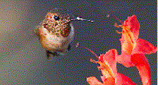
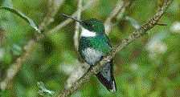
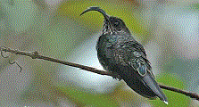

简介

蜂鸟是雨燕目蜂鸟科动物约600种的统称，是世界上已知最小的鸟类。蜂鸟身体很小，能够通过快速拍打翅膀悬停在空中，每秒约15次到80次，它的快慢取决于蜂鸟的大小。
更多...白腹棕尾蜂鸟

分布于中美洲（地处北美与南美之间，包括危地马拉、伯里兹、洪都拉斯、萨尔瓦多、
更多...白白尾尖镰嘴蜂鸟

白尾尖镰嘴蜂鸟是蜂鸟科、Eutoxeres属中的一个种。它身长14厘米，尾有一个白色尖端，
更多...蜂鸟是雨燕目蜂鸟科动物约600种的统称，是世界上已知最小的鸟类。蜂鸟身体很小，能够通过快速拍打翅膀悬停在空中，每秒约15次到80次，它的快慢取决于蜂鸟的大小。
更多...分布于中美洲（地处北美与南美之间，包括危地马拉、伯里兹、洪都拉斯、萨尔瓦多、
更多...白尾尖镰嘴蜂鸟是蜂鸟科、Eutoxeres属中的一个种。它身长14厘米，尾有一个白色尖端，
更多...分布于中美洲（地处北美与南美之间，包括危地马拉、伯里兹、洪都拉斯、萨尔瓦多、
更多...加入我们的邮件列表，您可以定期获得更多有关蜂鸟和其他鸟类的相关知识。我们不会将您的邮件地址泄露给任何人。